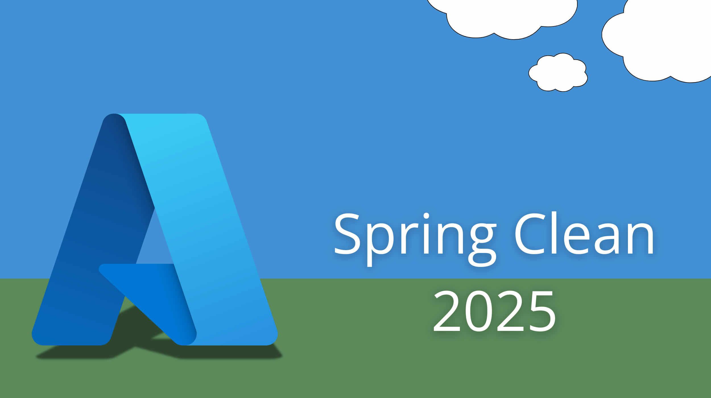
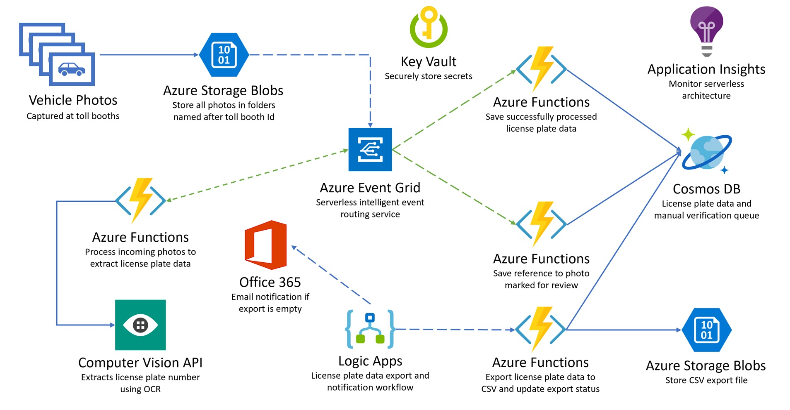

Hey folks,
Welcome to #AzureSpringClean, an initiative from Joe Carlyle and Thomas Thornton which celebrates its 4th edition this year. I’m thrilled to be part of this again for the 3nd time this year. My first article had security in mind, explaining the difference between Azure Service Principals and Managed Identity.
My 2nd article focused on understand DevSecOps, and how you can optimize security in your application deployment lifecycle, by “shifting left”. (https://www.007ffflearning.com/post/azure-spring-clean---devsecops-and-shifting-left-to-publish-secure-software/)
Where now for this 3rd article, where moving more towards the ’end’ of the traditional DevOps cycle, discussing Operations and Monitoring, by using Azure Application Insights.
Introduction
In today’s digital age, monitoring and maintaining the health of applications is crucial for ensuring optimal performance and user satisfaction. Azure Monitor, a comprehensive monitoring solution from Microsoft, offers a suite of tools to help developers and IT professionals keep their applications running smoothly. One of the key components of Azure Monitor is Application Insights, which provides deep insights into application performance and user behavior. In this article, we’ll explore Application Insights, its features, and how it integrates with Azure Monitor to deliver a robust monitoring solution.
Overview of Azure Monitor
Azure Monitor is a powerful platform that provides end-to-end monitoring for your applications and infrastructure. It collects and analyzes telemetry data from various sources, including Azure resources, applications, and on-premises environments. Azure Monitor helps you understand how your applications are performing and proactively identifies issues affecting them. It encompasses several services, including Log Analytics, Application Insights, and Azure Monitor for VMs, among others.
Application Insights Overview
Application Insights is an application performance management (APM) service within Azure Monitor. It is designed to monitor live applications, providing real-time insights into their performance and usage. By integrating with OpenTelemetry, Application Insights offers a vendor-neutral approach to collecting and analyzing telemetry data, enabling comprehensive observability of your applications. It supports various programming languages and frameworks, including .NET, Java, Node.js, and client-side JavaScript.
Key Features of Application Insights
End-to-End Transactions: Application Insights provides a detailed view of end-to-end transactions, allowing you to trace and diagnose issues across different components of your application4. This feature supports time scrubbing, enabling you to filter and analyze specific time periods in more detail.
Performance and Failures: The service offers tools to monitor performance and identify failures. It includes features like the Roles tab, which preserves role selection while navigating from the application map, and the availability tool, which helps you monitor the availability and responsiveness of your application endpoints.
Application Map: The application map provides a visual overview of your application’s architecture and the interactions between its components. It includes features like “Zoom to fit” and grouped nodes to make the map easier to read and navigate4.
Live Metrics: With Live Metrics Stream, you can monitor your application’s health metrics in real-time, even while deploying changes. This feature helps you quickly identify and address issues as they arise.
Smart Detection: Application Insights uses machine learning to detect anomalies in your application’s performance and sends alerts with embedded diagnostics. This proactive approach helps you address potential issues before they impact users.
Integration with Azure Services: Application Insights integrates seamlessly with other Azure services, such as Azure DevOps, Azure Kubernetes Service (AKS), and Azure Functions. This integration allows you to monitor and manage your applications using a unified platform.
Integration with Azure Monitor
Application Insights is a core component of Azure Monitor, and its integration with other Azure Monitor services enhances its capabilities. For example, you can use Log Analytics to query and analyze telemetry data collected by Application Insights. This integration provides a comprehensive view of your application’s performance and helps you identify trends and patterns.
Azure Monitor also offers out-of-the-box insights for various Azure resources, such as virtual machines, containers, and storage accounts. These insights are built on workbooks, which are interactive reports that you can customize to meet your specific needs. By leveraging these insights, you can gain a deeper understanding of your application’s performance and make data-driven decisions to optimize it.
Use Cases and Benefits
Proactive Monitoring: Application Insights enables proactive monitoring of your applications, helping you identify and address issues before they impact users. This proactive approach improves the overall user experience and reduces downtime.
Performance Optimization: By providing detailed insights into your application’s performance, Application Insights helps you identify bottlenecks and optimize your code. This optimization leads to faster and more efficient applications.
User Behavior Analysis: Application Insights offers tools to analyze user behavior, such as usage patterns, session durations, and user flows. This analysis helps you understand how users interact with your application and identify areas for improvement.
Cost Management: By monitoring resource usage and performance, Application Insights helps you manage costs more effectively. You can identify underutilized resources and optimize their usage to reduce costs.
Enhanced Security: Application Insights provides insights into potential security issues, such as failed login attempts and suspicious activities. By monitoring these activities, you can enhance the security of your applications and protect sensitive data.
Seeing it in action
Now that we covered the theoretical part, let’s have a look at what all this looks like from a sample application workload perspective.
I am using a sample app which I have been using in all my Azure Architecture (AZ-305) and Developing Azure Solutions (AZ-204) classes over the years, when talking about Application Insights. It recently got moved to a new ’trainer’ platform out of a project I’m leading within Microsoft, based on Azure Developer CLI deployments for trainer demo scenarios. (If you’re new to AZD, you should definitely check it out!)
Head over to Trainer-Demo-Deploy and search for tollbooth

Select the Tollbooth Serverless Architecture with Azure Functions card, and follow the Template Details instructions to get it deployed. Most important is having the Scenario-specific prereqs running on your local machine, as well as having Azure Developer CLI as well.
from azd up, it will ask you for your Azure subscription and the region where you want to deploy the scenario. Give it about 12-15min, and the fun can start…

As you can see from the architecture, it is using several different services in Azure, to replicate a Tollbooth / Automated Parking Lot management application. This will generate ’traffic’ to be monitored through Application Insights.
Using this demo scenario, you showcase a solution for processing vehicle photos as they are uploaded to a storage account, using serverless technologies on Azure. The license plate data gets extracted using Azure Cognitive Service, and stored in a highly available NoSQL data store on Azure CosmosDB for exporting. The data export process will be orchestrated by a serverless Azure Functions and EventGrid-based component architecture, that coordinates exporting new license plate data to file storage using the Blob Trigger Function. Each aspect of the architecture provides live dashboard views, and more detailed information can be viewed real-time from Azure Application Insights.
Azure App Service - Upload Images
-
The starting point of the demo scenario, is the imageupload web application. This simulates car traffic for 500 vehicles, which should be enough to see live data dashboard views across all architecture components. Now there is a 1-2 minute delay before the metrics actually show up in the dashboards.
-
Navigate to the imageupload website URL (https://%youralias%tbimageuploadapp.azurewebsites.net/)
- Click the Upload Images button - this loops to 500
Azure Storage Account
-
Once the upload process is complete, navigate to the %youralias%datalake Azure Storage Account.
-
Navigate to the Images Container; notice the different image files, generated from the web application. Feel free to select a file and download it, to show it contains a car image with a license plate. You might open different images, to showcase there are different cars (Note: in reality, we used 10 different images, looping 50 times, to generate 500 images in total)
Azure Functions
- Once the images are available in Azure Storage Account, an Azure Function ProcessImage, which sends image files to Azure Cognitive Service
-
Use this Azure Function to explain the concept of triggers (HTTP, Blob Trigger,…) and how the starting point is ‘something happens in Blob’, which kicks off the Function.
-
Once the data comes back from Cognitive Service, it triggers the next Azure Function SavePlateData, which stores text values in Azure CosmosDB.
Event Grid / Topics & Subscriptions
- Notice that this Function is based on an Event Trigger, coming from Event Grid (%youralias%eventgridtopic). From the Azure Portal, navigate to Event Grid, and select Topics. Open the EventGridTopic resource**.
- Highlight the Event Grid Topic is related to the Event Grid Subscription called SavePlate, which triggers the actual Azure Function SavePlateData. This also clarifies the use case, where Event Grid acts as the orchestrator, watching over certain events to occur, and based on the settings of the subscription, it triggers an Azure Function process.
- Select the SavePlate Event Grid Subscription from the dashboard view. This opens a new dashboard, showing the hierarchy of the event:
- Event Grid Topic : %youralias%eventgridtopic
- Metrics - showing the 500 events
- Azure Function - SavePlateData
- While talking about Event Grid Subscriptions, there is actually a 2nd subscription in place, which watches over the Azure Blob Storage events. Navigate back to the Azure Storage Account %youralias%tbdatalake, and navigate to Events.
-
Notice the Event Grid Subscription blobtopicsubscription, which is a Web Hook, meaning, it gets triggered based on HTTP requests.
-
From within the Event Subscription detailed dashboard, showing Metrics initially, navigate to Filters. Highlight the subscription is based on filter Create Blob. This is what triggers the Azure Function, based on “a new blob is getting created”. All other events in the Storage Account are getting bypassed/neglected.
Cosmos DB
- Open the %youralias%cosmosdb. Navigate to Data Explorer. Show the LicensePlates Database, which has 2 different Containers NeedsManualReview (not used in this demo scenario), and Processed. The Processed Container is where the actual text information returned from Azure Cognitive Service is getting stored.
- Under Processed, open the Items view. This shows the different document items in the container, each document having the license plate, image file name and timestamp in a JSON document format.
Application Insights
- Navigate to Application Insights, opening the %youralias%tbappinsights resource. Go to Live Metrics. This will show a lot of different views about the ongoing processing of Functions, Events, Storage activity and more.
Note: If you see the “Demo” page, it means you don’t have live metrics (anymore), and the processing of the car images is completed already. To generate (new) live data, go back to the imageupload web app, and generate new images by pressing the “Upload images” button.
- From within the base charts, scroll down to Servers section. There should be anywhere between 2-10 visible. Explain that these “servers” reflect the different Azure Functions instances getting triggered, and handling the image processing from blob to CosmosDB.
- Zoom in on the sample telemetry to the right hand side. Explain how the different API-streams of the application topology are visible here. Notice how it shows the Azure Function call “SavePlateData”, as well as interaction with “Azure Computer Vision”, etc…
- Depending when you opened the Live Metrics view, the sample telemetry should have a red item Dependency, which simulates an issue from the Azure Function to Cognitive Service, showing you the details of the API POST Action call.
- Next, select Application Map within Application Insights.
- Explain the usage of Application Map, describing the 2 different views here. The first view %youralias%events, shows the number of running (Azure Functions) instances, with different metrics (performance details). The Events are representing communication with Azure CosmosDB. It shows the number of database calls, as well as the average performance between the Event Functions and CosmosDB.
-
Select the value metric in the middle between Events and CosmosDB, to open the more detailed view. This opens a blade to the right-hand side of the Azure Portal, exposing many more details about the processing of events. It shows details about the CosmosDB instance, as well as performance details of each CosmosDB action (GET, Create Document, Get Collection, etc…)
-
Click on Investigate Performance
- Use this detailed dashboard to explain the different sections, reflecting chart representations of actual Log Analytics Queries. This can be demoed by selecting View Logs from the top menu, selecting a section, and opening it in Log Analytics.
Conclusion
Application Insights, as part of Azure Monitor, is a powerful tool for monitoring and optimizing the performance of your applications. Its comprehensive features, seamless integration with other Azure services, and real-time insights make it an essential component of any modern monitoring strategy. By leveraging Application Insights, you can ensure that your applications run smoothly, deliver a great user experience, and achieve your business goals.

Cheers!!
/Peter